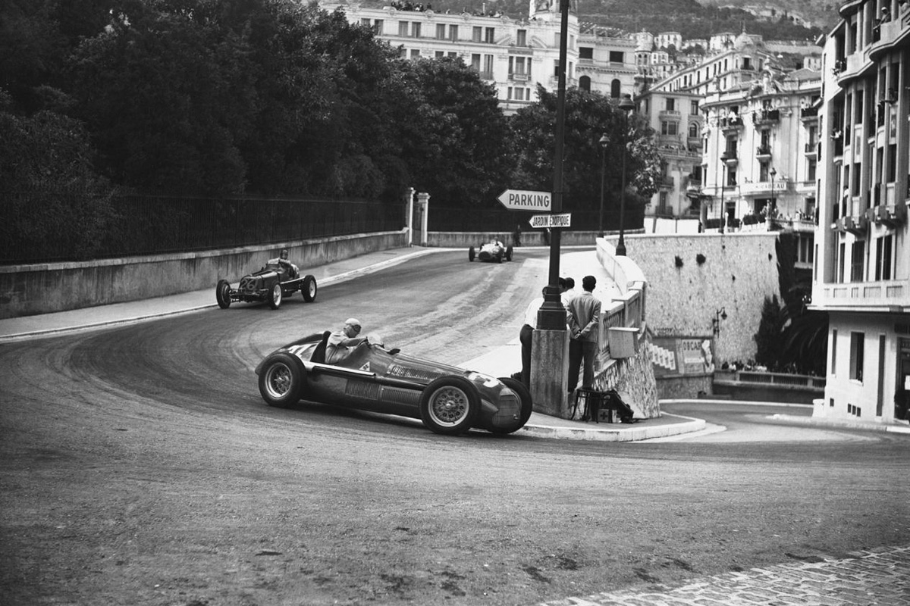
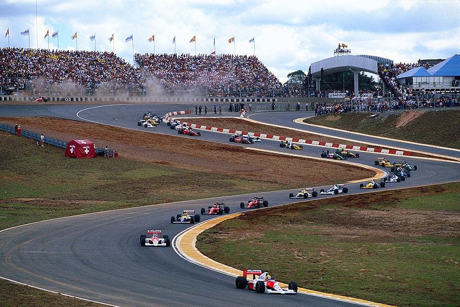
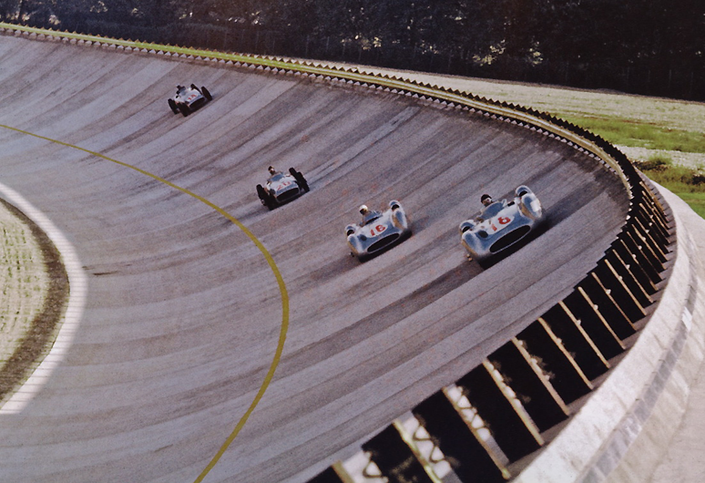
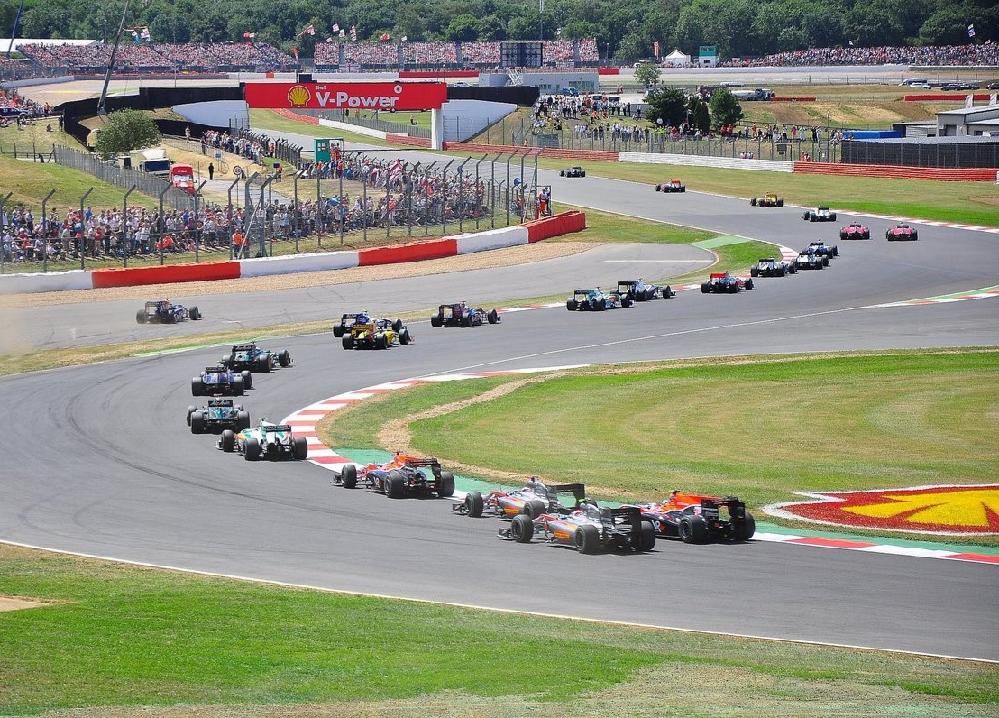
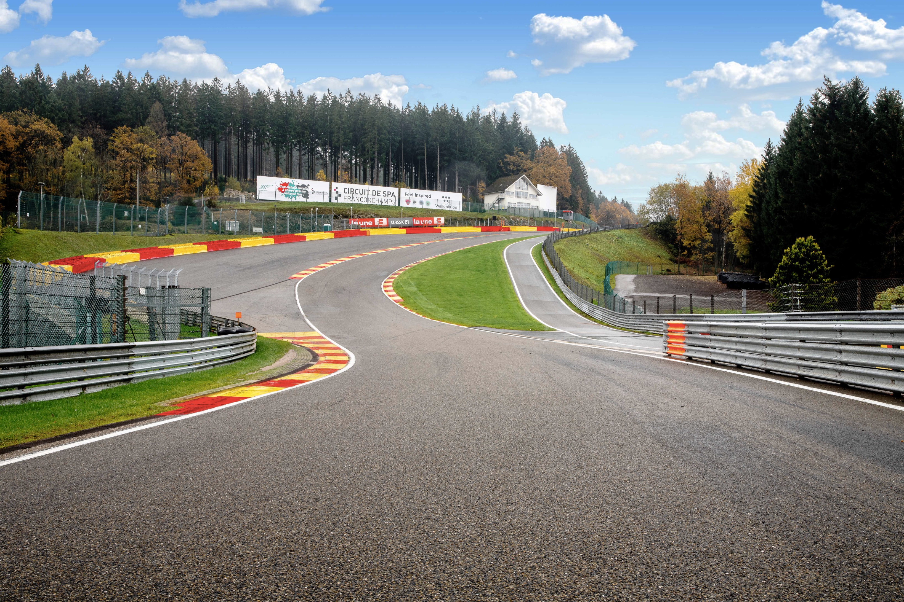
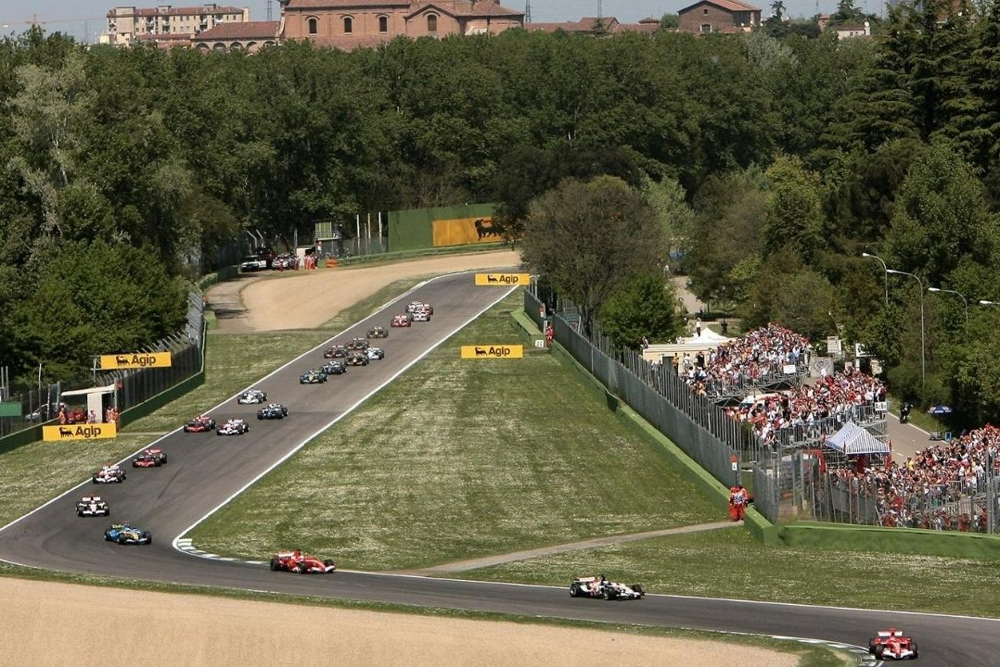

CIRCUITOS HISTORICOS DE LA FORMULA 1

Circuito de Mónaco
El Circuito de Mónaco (en francés: Circuit de Monaco), conocido también como Circuito de Monte Carlo, es un circuito urbano de carreras ubicado en el Principado de Mónaco que alberga el Gran Premio de Mónaco de Fórmula 1 y de Fórmula E. Fue fundado en 1920 por Antony Noghès. Es un trazado atípico, con pocas curvas rápidas y en el que las barreras están pegadas a la pista, algo que hace que sea complicado adelantar a otros pilotos e incluso terminar la carrera sin irse directamente contra los muros. Una carrera en la que lo que prima es la tracción del coche y su estabilidad más que la potencia y la velocidad; un factor clave es la búsqueda de la adherencia mecánica.

Autódromo José Carlos Pace
El Autódromo José Carlos Pace, también conocido como Interlagos, es un autódromo localizado en el barrio de Interlagos en los suburbios de São Paulo, Brasil. Ha sido sede de la mayoría de las ediciones del Gran Premio de Brasil de Fórmula 1, incluyendo todas desde 1990 hasta 2019. A diferencia de la mayoría de los circuitos sudamericanos y europeos, Interlagos tiene sentido de giro antihorario. El trazado combina dos sectores con rectas largas y curvas cerradas, con un mixto que tiene constantes curvas y contracurvas. La recta principal en subida desemboca en la S de Senna, la frenada más fuerte de la pista que suele utilizarse para intentar adelantamientos.

Autódromo Nacional de Monza
El Autódromo Nazionale di Monza es un autódromo ubicado en el parque de la villa real de Monza en las cercanías de Monza, región de Lombardía, Italia, a unos 20 km al norte de la ciudad de Milán. El circuito es reconocido por albergar el Gran Premio de Italia de Fórmula 1 (solamente una edición se hizo en otra pista), y se caracteriza por el alto porcentaje del trazado que los pilotos recorren con el acelerador a fondo, debido a las largas rectas. El circuito, en sus diferentes versiones, ha albergado todas las temporadas de Fórmula 1 de la historia un Gran Premio, excepto en 1980.

Circuito de Silverstone
El Circuito de Silverstone es un autódromo localizado en Silverstone, condado de Northamptonshire, en Inglaterra, Reino Unido, a unos 20 km al sur de Northampton y 25 km al oeste de Milton Keynes. Parte del autódromo se halla en Northamptonshire y la restante en Buckinghamshire. Es uno de los circuitos más prestigiosos de Europa, al haber albergado el Gran Premio de Gran Bretaña de Fórmula 1, los 1000 km de Silverstone del Campeonato Mundial de Resistencia, y el Gran Premio de Gran Bretaña de Motociclismo del Campeonato Mundial de Motociclismo, entre otras pruebas internacionales.

Circuito de Spa-Francorchamps
El Circuito de Spa-Francorchamps (en francés Circuit de Spa-Francorchamps) es un circuito de carreras situado cerca de las localidades de Spa, Francorchamps, Bélgica. Spa-Francorchamps se ha caracterizado desde sus orígenes por lo impredecible de las condiciones meteorológicas, que muchas veces hacen que una parte de la pista esté seca mientras en el otro extremo llueve en forma torrencial. La sección más característica del circuito es la combinación de Eau Rouge y Raidillon. Tras atravesar la lenta horquilla de La Source, los pilotos aceleran por una recta en bajada tras lo cual deben encarar una subida con una serie de curvas zigzagueantes, que finalizan en contracurva ciega.
